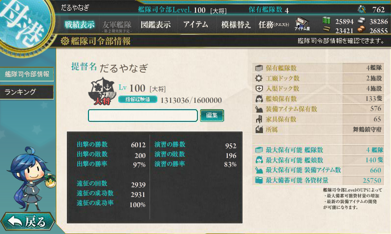
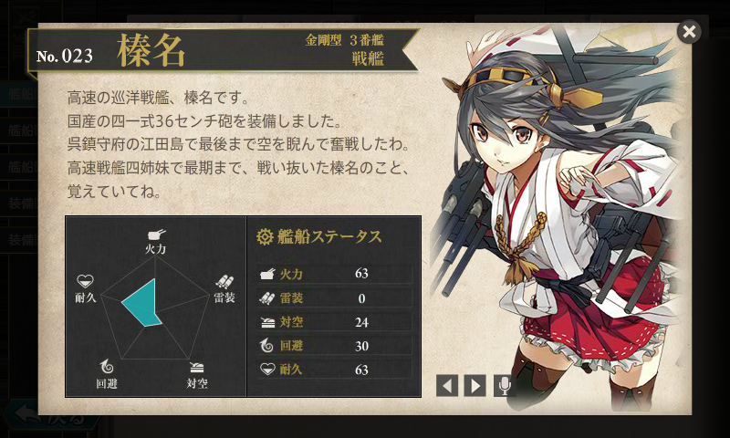
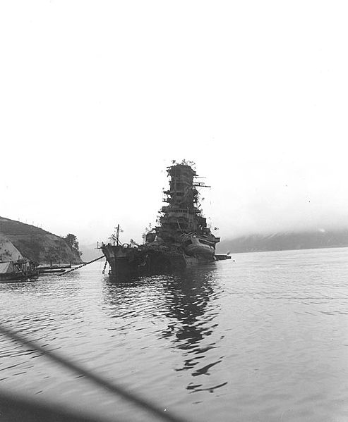
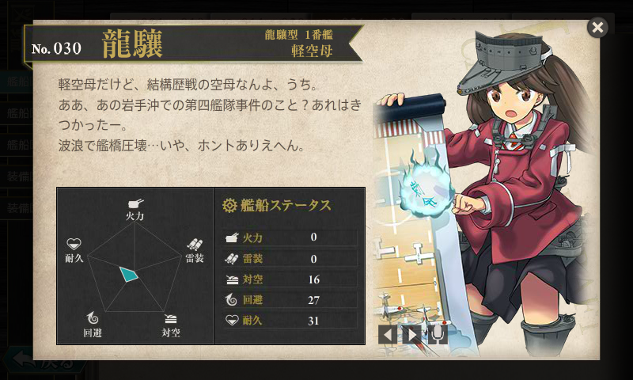
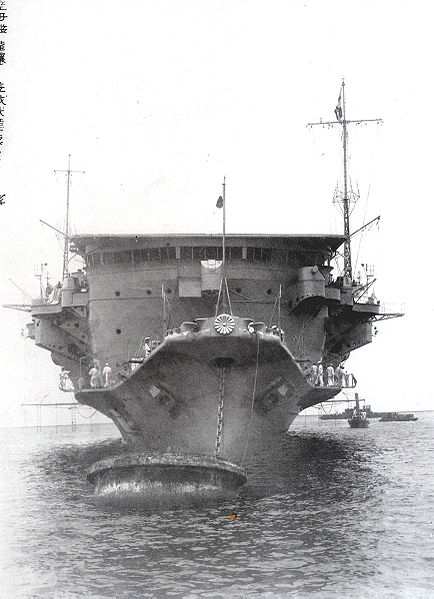
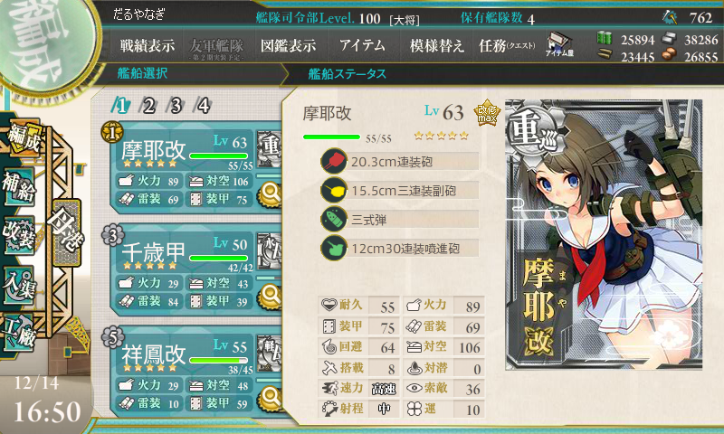
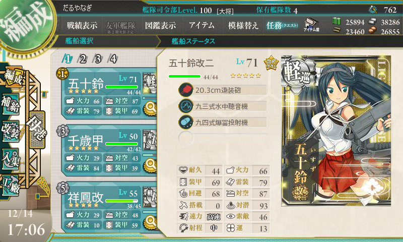
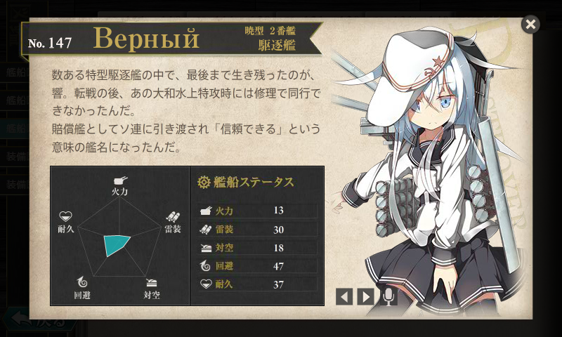
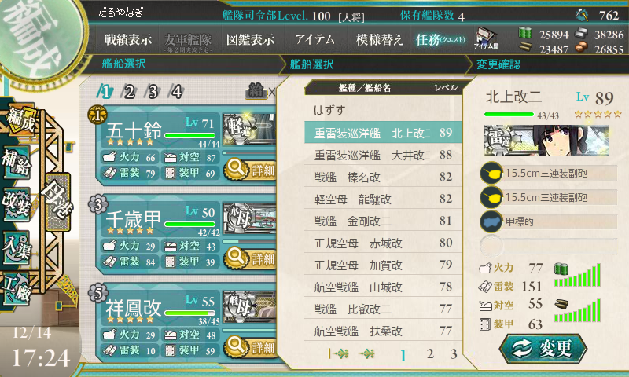

艦これ: いつのまにか提督レベルが 100 になっていたので、育てている艦娘を晒すぞ！
公開日：

戦艦・航空戦艦

- 榛名 改 Lv82
- 金剛 改二 Lv81
- 山城 改 Lv78
- 比叡 改二 Lv77
- 扶桑 改 Lv76
まずは戦艦部門。初めて Get した戦艦、榛名さんがトップでした。BOSS を仕留めた回数も No.1 じゃないかな。お世話になっております。しかも強いだけじゃない。なんてったって健気でカワイイ。艦隊の女神やな。

大破着底した榛名さんの写真見るだけでちょっと涙出る。これは青葉も同じだけど。
あと、わりと不幸扶桑型航空戦艦が好きで、瑞雲×2 を積んでレベリングのお供にしています。山城さんは不幸でいつも愚痴をこぼしてばかりだけど、戦闘のときはキリッとした声でこれまたイケる。
ちなみに一番レベル低いのは 武蔵 改 Lv 71。演習と対潜の攻撃回数増やしでしか運用していないのだけど、旗艦にしておくだけで結構レベルが上がった。
万遍なく育てるタイプなので、突出してレベルの高い娘はいないけれど、おかげでローテーションしても戦力がガタ落ちしないので、割りと潤沢にメンバー交代をして短期間で任務をクリアできるのがメリットかな。時間がない日でも30分ぐらいで基本的なデイリー出撃任務は消化できる。
正規空母・軽空母・水上機母艦

- 龍驤 改 Lv82
- 赤城 改 Lv80
- 加賀 改 Lv79
- 翔鶴 改 Lv72
- 瑞鶴 改 Lv71
続いて空母部門。一航戦・二航戦・五航戦を抑えて、まさかの軽空母・龍驤がトップ。
正直強いかと言われれば微妙だけど、そこら辺は思い入れ次第でなんとでもなるのが「艦これ」のええところやね。似非関西弁もかわいい。

欠陥空母？（“独特なシルエット”と呼んであげよう）と思いきや、史実では空母不足も相まって、案外活躍しているのもうれしいところやね。
正規空母はすべて Lv 70 代、軽空母も Lv 50 代って感じ。最低レベルは瑞鳳の Lv53。実は水上機母艦も育てていて、こっちは千歳・千代田ともに Lv 50。甲標的＋瑞雲×2 は開幕での手数が多く、3-2-1 で無双できて面白い。唯一面倒なのは、軽空母のちとちよと同じ艦隊に組めないところ。まぁ、しょうがないんだけど。
重巡洋艦・航空巡洋艦

- 摩耶 改 Lv63
- 青葉 改 Lv61
- 衣笠 改二 Lv59
- 鳥海 改 Lv57
- 最上 改 Lv56
重巡洋艦・航空巡洋艦部門は摩耶さまがトップ。対空値が100を超えるのでイベントで頑張ってもらったのが原因か。姉妹で二隻セットにして運用するのが好きなのだけど、相方・鳥海とは少しレベルに開きができてしまった。
お気に入りは青葉型。この前、衣笠さんに改二がきた時はうれしかったデスね。それまでのグラフィックスはそんなに好きじゃなくて、青葉が好きだから衣笠もセットでレベルが上がっていただけなのだけど、今は喜び進んで使わせていただいております (^q^
航空巡洋艦はそれほど愛用していない（資源コストを別にすれば、どうしても航空戦艦の下位互換なので）のだけど、重巡とレベルが離れないようにお育て中。何をいれたらよいか迷うときは、航巡をいれておけばいい。三隈もほしいなー。
それにしてもこのカテゴリ、意識して使わないとレベルが上がらないような気がする。自分はデイリー出撃任務の“南西諸島海域の制海権を握れ”で使っているだけだけど、なるべく戦艦を削って重巡を入れるように心掛けないと。ちなみにこの部門最低レベルは高雄・愛宕の Lv51。チチのデカさには惑わされない！ 最初にゲットした重巡洋艦・妙高さんは Lv54 ぐらい。
軽巡洋艦

- 五十鈴 改二 Lv71
- 由良 改 Lv64
- 鬼怒 改 Lv64
- 阿武隈 改 Lv64
- 夕張 改 Lv64
なんと、お気に入りの川内三姉妹はランクインせず（川内 Lv50、神通 Lv42、那珂 Lv40）。遠征艦隊の旗艦として固定していたのが敗因か。そろそろ外して育てようかな……。
トップは対潜番長の五十鈴で、続く由良・鬼怒・阿武隈も対潜要因。夕張はスロットが多いので、装備次第で砲雷撃も対潜もこなせるので使い勝手がよく、ついつい育ってしまう。
もっともレベルが低いのは最近加入したばかりの阿賀野・能代（ともに Lv37）……と思いきや、天龍（35）、龍田（33）でした。まぁ、世間的には人気っぽいけど。戦艦・重巡・空母と違って、軽巡には上下にだいぶレベル差がある。
駆逐艦

- Верный Lv 71
- 時雨 改二 Lv63
- 綾波 改 Lv61
- 夕立 改二 Lv60
- 白露 改 Lv55
- 村雨 改 Lv55
- 雪風 改 Lv50
- 島風 改 Lv49
- 吹雪 改 Lv48
- 白雪 改 Lv43
駆逐艦部門のトップは Верный（ちゃんと響も育てている。Lv40）。まぁ、この子は改造するためにがんばっただけ……。ついこの前までは雪風が高位につけていたのだけど、この前のイベントでダメコン積み忘れて轟沈させてしまった……。現在の雪風は丹陽が来た時のために育てていた予備。
一番好きなのは白露型で、時雨や夕立のレベルが高めなのはなにも改二目当てではない（断言）。最近、五月雨や涼風が白露型なのを思い出して、そっちも育てている*1。でも、綾波は改二待ちだろって？ 可愛いから育ててるに決まってんじゃねーか！( ‘д‘⊂彡☆))Д´) ﾊﾟｰﾝ
ちなみに最低レベルは睦月の Lv28。睦月型は完全な遠征要員なので、勝手に育つのを待つ方針。しっかし駆逐艦は数が多すぎて、全部まんべんなく育ててるとそんなにレベルが上がらんね。
まとめ

120人万遍なく育てているせいか、提督レベルの割に艦娘が育っていない感じ。全艦娘で最高レベルは、重雷装巡洋艦・北上さまの Lv89 で、実は Lv90 代が一人もいなかったりする。正直、雷巡は強すぎるので、イベントのとき以外はあまり使わないようにしている。無論嫌いではないんだけどｗ 今は木曾を雷巡にしようと奮闘中……ではみなさん、演習などでお会いしましょう。
*1:涼風は改白露型、海風型とも言われるけど